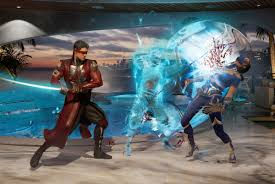
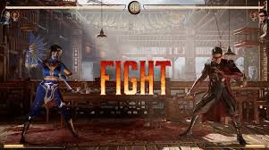

Mortal Kombat 1 (2023) es la última entrega de la icónica saga de juegos de lucha Mortal Kombat, desarrollada por NetherRealm Studios y publicada por Warner Bros. Interactive Entertainment. Esta entrega, que marca un reinicio de la franquicia, fue lanzada en septiembre de 2023 para PlayStation 5, Xbox Series X/S, Nintendo Switch y PC. Mortal Kombat 1 regresa a sus raíces y, al mismo tiempo, introduce una serie de cambios y nuevas características, tanto en jugabilidad como en narrativa, para ofrecer una experiencia fresca para los veteranos y nuevos jugadores.
¿De qué trata Mortal Kombat 1?
A diferencia de otras entregas de la serie, Mortal Kombat 1 no es una continuación directa, sino un reinicio completo del universo. La historia se sitúa después de los eventos de Mortal Kombat 11, en donde Liu Kang, ahora convertido en Dios del Fuego, ha remodelado la realidad y creado un nuevo reino. En este nuevo mundo, los personajes clásicos de la saga, como Raiden, Scorpion, Sub-Zero, Sonya Blade y muchos más, tienen nuevas versiones de sí mismos, y las relaciones entre ellos también se ven alteradas.
En este contexto renovado, los luchadores deberán enfrentarse a nuevas amenazas, mientras Liu Kang intenta garantizar la paz en el nuevo universo que ha creado. El reinicio de la historia ofrece una oportunidad para que los jugadores experimenten de nuevo la clásica rivalidad entre personajes, pero con giros inesperados y una nueva narrativa.
 